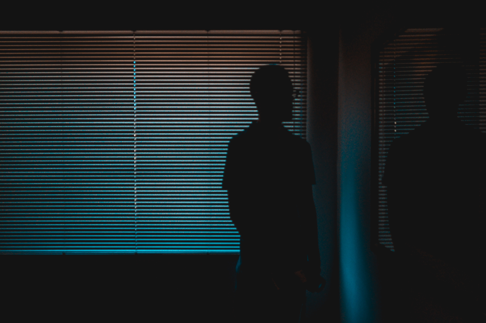

Lo-fi (short for low-fidelity) is a music or production quality in which elements usually regarded as imperfections of a recording or performance are audible, sometimes as a deliberate aesthetic choice. The standards of sound quality (fidelity) and music production have evolved throughout the decades, meaning that some older examples of lo-fi may not have been originally recognized as such. Lo-fi began to be recognized as a style of popular music in the 1990s, when it became alternately referred to as DIY music. Harmonic distortion and "analog warmth" are sometimes misleadingly suggested as core features of lo-fi music. It is characterised by the inclusion of elements normally viewed as undesirable in professional contexts, such as misplayed notes, environmental interference, or phonographic imperfections (degraded audio signals, tape hiss, and so on). Pioneering, influential, or otherwise significant artists include the Beach Boys (Smiley Smile), R. Stevie Moore (often called "the godfather of home recording"), Paul McCartney (McCartney), Todd Rundgren, Jandek, Daniel Johnston, Guided by Voices, Sebadoh, Beck, Pavement, and Ariel Pink. Although "lo-fi" has been in the cultural lexicon for approximately as long as "high fidelity", WFMU DJ William Berger is usually credited with popularizing the term in 1986. At various points since the 1980s, "lo-fi" has been connected with cassette culture, the DIY ethos of punk, primitivism, outsider music, authenticity, slacker/Generation X stereotypes, and cultural nostalgia. The notion of "bedroom" musicians expanded following the rise of modern digital audio workstations, and in the late 2000s, lo-fi aesthetics served as the basis of the chillwave and hypnagogic pop music genres.